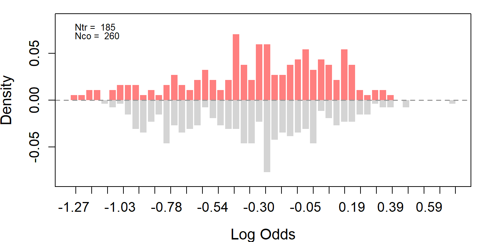
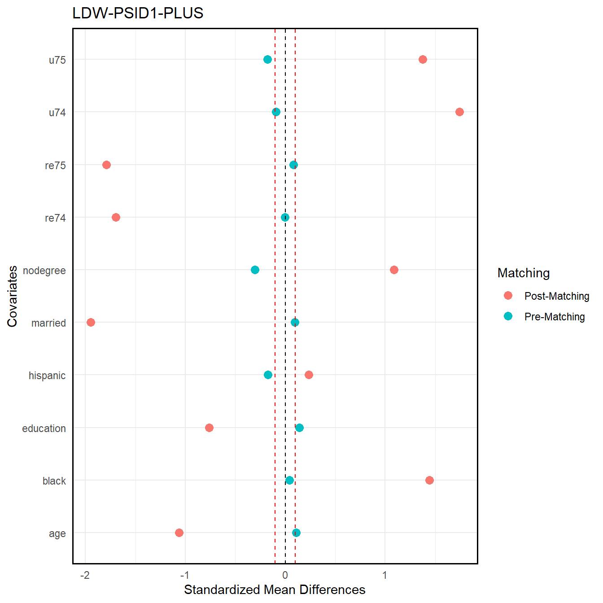
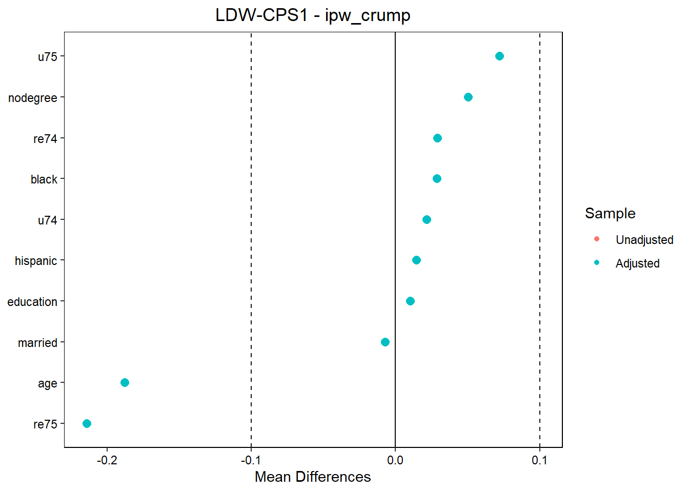

Chapter 1 LaLonde-Calónico-Smith (LCS) Data
This section (5) examines the LaLonde female samples reconstructed by Calónico and Smith (2017), referred to as the LaLonde-Calónico-Smith (LCS) sample (loaded as lcs below, similar to Imbens and Xu (2024)).
For detailed explanations of the analysis steps and notes, please refer to section 2. Here, we only present and explain the LCS–specific results.
1.1 Set up
1.1.1 Source functions and load data
1.1.3 Inspect data
# collect datasets in a list
data <- list(lcs = lcs, lcs_psid = lcs_psid, lcs_psid_plus = lcs_psid_plus)
# inspect key metrics of each dataset
summary_stats <- inspect_data(data)
datatable(summary_stats, caption = "Summary Statistics",
options = list(scrollX = TRUE, paging = FALSE, pageLength = -1, searching = FALSE))1.2 Model
# define variables
Y <- "re79"
treat <- "treat"
# redefine covariates: removing "nchildren75" to be used as placebo outcome
covar <- c("age", "educ", "nodegree", "married", "black", "hisp",
"re75", "u75")In the following analysis, only PSID1 data is used as the original LaLonde study and its reconstruction by Calónico and Smith (2017) designate PSID1 as the appropriate nonexperimental control group for women, providing a comparable observational dataset that aligns with the experimental sample’s characteristics.
1.2.1 Assessing overlap and covariate balance
1.2.1.1 Overlap
Figure 1.1: FIGURED1. SubfigureA:LCS-Experimental. SubfigureB:LCS-PSID1.
lcs_psid.ps <- assess_overlap(data = lcs_psid, treat = treat, cov = covar, xlim = c(-11, 7), breaks = 40)
Figure 1.2: FIGURED1. SubfigureA:LCS-Experimental. SubfigureB:LCS-PSID1.
As anticipated, the LCS-Experimental data exhibit an almost perfect overlap. In contrast, the observational dataset LCS-PSID1 displays weak overlap.
lcs_psid_plus.ps <- assess_overlap(data = lcs_psid_plus, treat = treat, cov = covar, xlim = c(-15, 5))
Figure 1.3: FIGURED1. SubfigureC:LCS-PSID1-PLUS.
With the expanded dataset LCS-PSID1, it is evident that the degree of overlap between treated and control groups has improved, as seen by a greater spread of log-odds densities across both samples.


1.3 Improving primarily covariate balance
1.3.1 Matching
1.3.1.2 Stratum matching
1.4 Improving primarily overlap
1.5 Integrated methods
1.5.1 Trimming and matching
1.5.1.1 Propensity score threshold trimming and nn matching
(Similar to tutorial of Imbens and Xu (2024))
# apply trimming with threshold 0.9
lcs_psid_trim <- ps_trim(lcs_psid_plus.ps, threshold = 0.9)
# exclude experimental controls
lcs_psid_trim_match <- subset(lcs_psid_trim, expc %in% c(0, 2) & ps_assoverlap)
# re-estimate propensity scores and employ 1:1 matching
lcs_psid_trim_match <- psmatch(data = lcs_psid_trim_match, Y = "re79", treat = "treat", cov = covar)
# trim experimental data
lcs_trim_psid <- subset(lcs_psid_trim, expc %in% c(0, 1))
lcs_trim_psid$treat[which(lcs_trim_psid$expc == 1)] <- 01.5.2 Trimming and weighting
# list trimming objects
all_trim.psid <- list(ps_threshold = lcs_psid.ps_trim,
common_range = lcs_psid.ps_common,
stuermer = lcs_psid.ps_stuermer,
walker = lcs_psid.ps_walker,
crump = lcs_psid.ps_crump)1.5.2.2 Stable balancing weights with 1) propensity threshold 2) common range 3) stuermer 4) walker 5) crump
1.5.3 Truncation and weighting
# list weight columns to apply truncation
weight_columns <- c("ipw_weight", "opt_weight", "cbps_weight", "ebal_weight")1.5.3.1 IPW, stable balancing, propensity score and entropy weights with 1) fixed maximum value truncation
1.5.3.2 IPW, stable balancing, propensity score and entropy weights with 2) at percentile truncation
# truncate weights such that values below the 5th percentile and above the 95th percentile are capped
percent_comb.psid <- lcs_psid.ps
for (wcol in weight_columns) {
if (wcol %in% names(percent_comb.psid)) {
percent_comb.psid <- truncate_weights_percentile(percent_comb.psid, weight_col = wcol, lower = 0.05, upper = 0.95)
}
}1.6 Reassessing methods
1.6.1 Matching
1.6.2 Weighting
# list all weights
all_weight.psid <- list(
ipw_weight = lcs_psid.ps$ipw_weight,
opt_weight = lcs_psid.ps$opt_weight,
cbps_weight = lcs_psid.ps$cbps_weight,
ebal_weight = lcs_psid.ps$ebal_weight
)1.6.3 Truncation
# list truncation methods
all_trunc.psid <- list(
fix_value = lcs_psid.ps_fixed,
at_perc = lcs_psid.ps_percent,
adapt = lcs_psid.ps_adapt
)1.7 Integrated methods
1.7.1 Trimming and matching
(Similar to tutorial by Imbens and Xu (2024))
# list all trimmed and matched samples
trim_match_comb.psid <- list(
ps_threshold_match = lcs_psid_trim_match
)1.7.2 Trimming and weighting
# list all combined results
trim_weight_comb.psid <- list(
ipw = ipw_comb.psid,
opt = opt_comb.psid,
cbps = cbps_comb.psid,
ebal = ebal_comb.psid
)1.8 Identifying best methods
1.8.1 Ranking
1.8.1.1 Initial dataset
# combine all results
all_psid <- combine_results("psid")
# save results
save_csv(all_psid, "lcs_psid1_all_results")1.8.1.2 Extended dataset
# combine results
all_psid_plus <- combine_results_plus("psid")
# save results
save_csv(all_psid_plus, "lcs_psid1_plus_all_results")1.8.2 Dataset construction
The table shows that for PSID1 the top methods include only matching and integrated approaches, with card as the best method.
list_psid <- list(
"All" = lcs_psid,
"original" = lcs_psid.ps,
"card" = m.out.psid.card,
"optimal_full" = m.out.psid.optimal_full,
"optimal_pair" = m.out.psid.optimal_pair,
"subcl" = m.out.psid.subcl,
"profile" = m.out.psid.profile,
"ipw_weight" = lcs_psid.ps$ipw_weight,
"opt_weight" = lcs_psid.ps$opt_weight,
"cbps_weight" = lcs_psid.ps$cbps_weight,
"ebal_weight" = lcs_psid.ps$ebal_weight,
"fix_value_ipw_weight" = fixed_comb.psid$ipw_weight,
"fix_value_opt_weight" = fixed_comb.psid$opt_weight,
"fix_value_cbps_weight" = fixed_comb.psid$cbps_weight,
"fix_value_ebal_weight" = fixed_comb.psid$ebal_weight,
"at_perc_ipw_weight" = percent_comb.psid$ipw_weight,
"at_perc_opt_weight" = percent_comb.psid$opt_weight,
"at_perc_cbps_weight" = percent_comb.psid$cbps_weight,
"at_perc_ebal_weight" = percent_comb.psid$ebal_weight,
"adapt_ipw_weight" = adapt_comb.psid$ipw_weight,
"adapt_opt_weight" = adapt_comb.psid$opt_weight,
"adapt_cbps_weight" = adapt_comb.psid$cbps_weight,
"adapt_ebal_weight" = adapt_comb.psid$ebal_weight,
"ps_threshold" = lcs_psid.ps_trim,
"common_range" = lcs_psid.ps_common,
"stuermer" = lcs_psid.ps_stuermer,
"walker" = lcs_psid.ps_walker,
"crump" = lcs_psid.ps_crump,
"ipw_ps_threshold"= ipw_comb.psid[[1]],
"ipw_common_range" = ipw_comb.psid[[2]],
"ipw_stuermer"= ipw_comb.psid[[3]],
"ipw_walker" = ipw_comb.psid[[4]],
"ipw_crump"= ipw_comb.psid[[5]],
"opt_ps_threshold" = opt_comb.psid[[1]],
"opt_common_range" = opt_comb.psid[[2]],
"opt_stuermer" = opt_comb.psid[[3]],
"opt_walker" = opt_comb.psid[[4]],
"opt_crump" = opt_comb.psid[[5]],
"cbps_ps_threshold" = cbps_comb.psid[[1]],
"cbps_common_range" = cbps_comb.psid[[2]],
"cbps_stuermer" = cbps_comb.psid[[3]],
"cbps_walker"= cbps_comb.psid[[4]],
"cbps_crump" = cbps_comb.psid[[5]],
"ebal_ps_threshold" = ebal_comb.psid[[1]],
"ebal_common_range" = ebal_comb.psid[[2]],
"ebal_stuermer" = ebal_comb.psid[[3]],
"ebal_walker" = ebal_comb.psid[[4]],
"ebal_crump" = ebal_comb.psid[[5]],
"ps_threshold_match" = lcs_psid_trim_match)1.8.3 Visuals
# visualize results
top5_objects.psid <- list_psid[top5_methods.psid]
# covariate balance
plot_weighting_balance(lcs_psid, treat, covar, top5_objects.psid, "PSID1 Top 5 Methods")## $opt_weight
##
## $ebal_weight
##
## $cbps_weight
##
## $at_perc_opt_weight
##
## $at_perc_ipw_weight
# overlap
# plot_weighting_overlap(lcs_psid, treat_col = "treat", weights_list = top5_objects.psid, covar = covar, prefix = "PSID1")# visualize covariate balance of specific results (sort for type)
top5_objects.psid_plus <- list_psid[top5_methods.psid_plus]
# covariate balance
plot_weighting_balance(lcs_psid, treat, covar, top5_objects.psid_plus, "PSID1-PLUS Top 5 Methods")## $opt_weight##
## $ebal_weight##
## $cbps_weight##
## $at_perc_opt_weight
##
## $at_perc_ipw_weight
1.9 Estimating
1.9.1 Average treatment effect on the treated (ATT)
# get estimates
out1 <- estimate_all(lcs, "re79", "treat", covar)
out2 <- estimate_all(lcs_psid, "re79", "treat", covar)
out.psid <- lapply(top5_datasets.psid, function(d) estimate_all(d, "re79", "treat", covar))
out3 <- out.psid[[1]]
out4 <- out.psid[[2]]
out5 <- out.psid[[3]]
out6 <- out.psid[[4]]
out7 <- out.psid[[5]]
load("data/lcs.RData")
out8 <- estimate_all(lcs_trim_psid, Y, "treat", covar)
out9 <- estimate_all(lcs_psid_trim, Y, "treat", covar)par(mfrow = c(4, 1), mar = c(4, 4, 2, 1))
# experimental benchmarks
band.exp <- out1[1, 3:4]
est.exp <- out1[1, 1]
# plot results
plot_coef(out1, band = band.exp, line = est.exp,
ylim = c(-15500, 5500), main = "(A) LCS-Experimental")
plot_coef(out2, band = band.exp, line = est.exp,
ylim = c(-15500, 5500), main = "(B) LCS-PSID1")
for (i in seq_along(out.psid)) {
this_title <- paste0("(", LETTERS[i+2], ") Top PSID1: ", top5_methods.psid[i])
plot_coef(out.psid[[i]], band = band.exp, line = est.exp,
ylim = c(-15500, 5500), main = this_title)
}Figure 1.6: FIGURED10. SubfigureA:LCS-Experimental. SubfigureB:LCS-PSID1. SubfigureC-G:Top-LCS-PSID1. SubfigureH:LCS-PSID1-PLUS. ATT Estimates Given Unconfoundedness using LCS Samples
# nonexperimtenal benchmarks
band.psid_plus <- out8[1, 3:4]
est.psid_plus <- out8[1, 1]
# plot results
plot_coef(out9, band = band.psid_plus, line = est.psid_plus,
ylim = c(-15500, 5500), main = "(H) Trimmed LCS-PSID1-PLUS")
Figure 1.7: FIGURED10. SubfigureA:LCS-Experimental. SubfigureB:LCS-PSID1. SubfigureC-G:Top-LCS-PSID1. SubfigureH:LCS-PSID1-PLUS. ATT Estimates Given Unconfoundedness using LCS Samples
# save results
save_att_panels(
out_list = list(out1, out2),
plot_titles = c("(A) LCS-Experimental", "(B) LCS-PSID1"),
band_list = list(band.exp, band.exp),
est_list = list(est.exp, est.exp),
prefix = "lcs_est_exp"
)
save_att_panels(
out_list = out.psid,
plot_titles = paste0("(", LETTERS[3:7], ") Top PSID1: ", top5_methods.psid),
band_list = replicate(length(out.psid), band.exp, simplify = FALSE),
est_list = replicate(length(out.psid), est.exp, simplify = FALSE),
prefix = "ldw_model_a_est_top_psid"
)
save_att_panels(
out_list = list(out9),
plot_titles = c("(H) Trimmed LCS-CPS1-PLUS"),
band_list = list(band.psid_plus),
est_list = list(est.psid_plus),
prefix = "ldw_model_a_est_plus"
)The above figures show the ATT estimates and their 95% confidence intervals for eight samples: LCS-Experimental, LCS-PSID1, a series of top-ranked subsamples of LCS-PSID1 based on various matching, weighting, truncation, trimming or integrated criteria, as well as a trimmed version of the LCS-PSID1-PLUS sample (analogous to Imbens and Xu (2024)).
Figure (A) presents the benchmark from the experimental sample (LCS-Experimental), serving as a reference for bias and variance assessment of observational samples. Figures (B) shows results for the observational sample LCS-PSID1 and figures (C) through (G) display results for LCS-PSID1-based top-ranked subsamples. Figure (H) shows results for a trimmed version of LCS-PSID1-PLUS, replicating the tutorial results of Imbens & Xu (2024).
Across the LCS-PSID1 dataset and its top-ranked subsamples, all estimators yield ATT estimates that largely cluster around the experimental benchmark except Diff-in-Means, which tends to produce estimates that deviate slightly more from the benchmark.
# get all outputs
all_outs <- c(list(out1, out2),
out.psid,
list(out9))
# get plot titles
all_plot_titles <- c("(A) LCS-Experimental", "(B) LCS-PSID1",
paste0("(", LETTERS[3:7], ") Top PSID1: ", top5_methods.psid),
"(H) Trimmed LCS-PSID1-PLUS")
# evaluate results
all_summaries <- lapply(all_outs, eval_att)
att_summary <- do.call(rbind, all_summaries)
rownames(att_summary) <- all_plot_titles
# print results
datatable(att_summary, caption = "ATT Summary Statistics",
options = list(scrollX = TRUE, paging = FALSE, pageLength = -1, searching = FALSE))The ATT results are presented in the table below:
# create result matrix
result_mat <- create_matrix_results(all_outs, all_plot_titles)
# render formatted table output
datatable(result_mat, caption = "ATT Estimates and SEs",
options = list(scrollX = TRUE, paging = FALSE, pageLength = -1, searching = FALSE))The tabulated results confirm visual patterns: Column (A) reports the estimates for the LCS-Experimental sample, column (B) for the LCS-PSID1 sample, columns (D)-(H) for the top-ranked subsample of LCS-PSID1, and column (C) for its trimmed version of LCS-PSID-PLUS.
For all PSID1-based samples, the ATT estimates remain overly positive. However, the estimates obtained with the Diff-in-Means estimator are consistently negative, except for the sample constructed with the card method, where the estimates are positive across all estimators.
1.9.2 Conditional average treatment effect on the treated (CATT)
catt.lcs <- catt(lcs, Y, treat, covar)
catt.psid <- catt(lcs_psid, Y, treat, covar)
catt.top5_psid <- lapply(top5_datasets.psid, function(d) catt(d, Y, treat, covar))catt.lcs.psid <- catt(lcs_trim_psid, Y, treat, covar)
catt.psid.trim <- catt(lcs_psid_trim, Y, treat, covar)# plot results
par(mfrow = c(2,2))
par(cex.main = 0.9)
plot_catt(
catt1 = catt.lcs$catt,
catt2 = catt.psid$catt,
att1 = catt.lcs$att[1],
att2 = catt.psid$att[1],
xlab = "CATT (Experimental)",
ylab = "CATT (CPS1)",
main = "(B) LCS-PSID1",
axes.range = c(-8000, 8000)
)
plot_catt_panels(
exp_catt = catt.lcs,
catt_list = catt.top5_psid,
plot_titles = paste0("(", LETTERS[3:7], ") Top PSID1: ", top5_methods.psid)
)
Figure 1.8: FIGURED11. SubfigureB:LCS-PSID1. SubfigureC-G:Top-LCS-PSID1. SubfigureH:LCS-PSID1-PLUS. CATT Estimates using LCS Data: Experimental vs. Nonexperimental

Figure 1.9: FIGURED11. SubfigureB:LCS-PSID1. SubfigureC-G:Top-LCS-PSID1. SubfigureH:LCS-PSID1-PLUS. CATT Estimates using LCS Data: Experimental vs. Nonexperimental
plot_catt(
catt1 <- catt.lcs.psid$catt,
catt2 <- catt.psid.trim$catt,
att1 <- catt.lcs.psid$att[1],
att2 <- catt.psid.trim$att[1],
xlab = "CATT (Experimental)",
ylab = "CATT (PSID1-PLUS-Trimmed)",
main = "(H) Trimmed LCS-PSID1-PLUS",
axes.range = c(-8000, 8000)
)
Figure 1.10: FIGURED11. SubfigureB:LCS-PSID1. SubfigureC-G:Top-LCS-PSID1. SubfigureH:LCS-PSID1-PLUS. CATT Estimates using LCS Data: Experimental vs. Nonexperimental
# combine all catt objects
all_catt <- c(list(catt.lcs, catt.psid),
catt.top5_psid,
list(catt.psid.trim))
all_catt_eval <- eval_catt(all_catt, all_plot_titles)
datatable(all_catt_eval, caption = "CATT Summary Statistics",
options = list(scrollX = TRUE, paging = FALSE, pageLength = -1, searching = FALSE))Figure 1.11: FIGURED12. CATT Estimates using LCS Data
With LCS-PSID1, CATT estimates span from $-3,149.81 to $2,395.66, contrasting with the CATT estimated from experimental data which ranges from $-478.45 to $2,895.23, with a mean CATT estimate of $886.31.
In contract, across the LCS-PSID1-based subsamples, the ranges of CATT estimates are relatively similar. Importantly, the mean CATT estimates remain positive in all cases and for the card subsample as well as the trimmed plus-sample the mean CATT values are notably reduced.
save_main_catt_panels(
catt_refs = list(catt.lcs),
catt_comps = list(catt.psid),
ylabels = c("CATT (PSID1)"),
prefix = "lcs_catt_main_panels",
main_titles = c("(B) LCS-PSID1")
)
save_catt_panels(
exp_catt = catt.lcs,
catt_list = catt.top5_psid,
plot_titles = paste0("(", LETTERS[3:7], ") Top PSID1: ", top5_methods.psid),
prefix = "lcs_catt_top5_psid"
)
save_plus_catt_panels(
catt1_list = list(catt.lcs.psid),
catt2_list = list(catt.psid.trim),
ylabels = c("CATT (PSID1-PLUS-Trimmed)"),
prefix = "lcs_catt_plus_panels",
main_titles = c("(H) Trimmed LCS-PSID1-PLUS")
)1.9.3 Quantile treatment effect on the treated (QTET)
qte.lcs <- est_qte(Y, treat, covar, data = lcs, cores = 4)
qte.lcs_psid <- est_qte(Y, treat, covar, data = lcs_psid)
qte.top5_psid <- lapply(top5_datasets.psid, function(d) est_qte(Y, treat, covar, data = d))qte.lcs.psid <- est_qte(Y, treat, NULL, data = lcs_trim_psid)
qte.lcs_psid.trim <- est_qte(Y, treat, covar, data = lcs_psid_trim)qte.lcs0 <- est_qte(Y, treat, NULL, data = lcs)
qte.lcs_psid0 <- est_qte(Y, treat, NULL, data = lcs_psid)
qte.top5_psid0 <- lapply(top5_datasets.psid, function(d) est_qte(Y, treat, NULL, data = d))par(mfrow = c(2,2))
par(cex.main = 0.9)
ylim = c(-25000, 15000)
# PSID1
plot_qte(qte.lcs_psid, qte.lcs_psid0, qte.lcs, main = "(B) LCS-PSID1", ylim)
legend("bottomleft", legend = c("Experimental", "Unadjusted", "Adjusted"),
lty = 1, pch = c(16, 17, 16), col = c(4, 2, 1), bty = "n")
# PSID1 top methods
plot_qte_top(qte.top5_psid, qte.top5_psid0, qte.lcs, all_plot_titles, main_start = 3)Figure 1.12: FIGURED13. SubfigureB:LCS-PSID1. SubfigureC-G:Top-LCS-PSID1. SubfigureH:LCS-PSID1-PLUS. QTET Estimates using LCS Data: Experimental vs. Nonexperimental
# PSID1-PLUS trimmed
plot_qte(qte.lcs_psid.trim, qte.lcs_psid.trim0, qte.lcs.psid, main = "(H) LCS-PSID1-PLUS (Trimmed)", ylim)
legend("bottomleft", legend = c("Experimental", "Unadjusted", "Adjusted"),
lty = 1, pch = c(16, 17, 16), col = c(4, 2, 1), bty = "n")
Figure 1.13: FIGURED13. SubfigureB:LCS-PSID1. SubfigureC-G:Top-LCS-PSID1. SubfigureH:LCS-PSID1-PLUS. QTET Estimates using LCS Data: Experimental vs. Nonexperimental
These figures present QTET estimates obtained from LCS-Experimental sample and several observational samples. The QTETs estimated from both the original and trimmed LCS-PSID1 samples (B and C), as well as from the top-ranked subsamples (E through H), align comparatively close with the true QTET. However, the QTETs from subsample (F) exhibit a stronger bias, suggesting greater estimation uncertainty.
# list results
plots_lcs <- list(
list(mod = qte.lcs_psid, mod0 = qte.lcs_psid0, bm = qte.lcs,
main = "(B) LCS-PSID1"),
list(mod = qte.lcs_psid.trim, mod0 = qte.lcs_psid.trim0, bm = qte.lcs.psid,
main = "(H) LCS-PSID1-PLUS (Trimmed)")
)
# save results
save_qtet(plots_lcs, prefix = "lcs")
save_qte_top(qte.top5_psid, qte.top5_psid0, qte.lcs, all_plot_titles,
main_start = 13, prefix = "lcs_top")1.9.4 Assessing outcome weights (OW)
# estimate ATT
res_att <- get_res_att(all_datasets, Y, treat, covar)
# extract outcome weights
ow_att <- derive_ow(res_att)par(mfrow = c(2,2))
par(cex.main = 0.9)
# plot outcome weights distribution
plot_ow(ow_att, all_plot_titles) 
Figure 1.14: FIGURED14. Outcome Weights using LCS Data
Figure 1.15: FIGURED14. Outcome Weights using LCS Data
# evaluate results
res_ow <- eval_ow(ow_att, all_datasets, all_plot_titles, treat, "AIPW-ATT")
datatable(res_ow, caption = "Outcome Weights for Treated and Untreated",
options = list(scrollX = TRUE, paging = FALSE, pageLength = -1, searching = FALSE))Consistent with the preceding sections, the evaluation shows that, across each sample, the estimated outcome weights sum to one within the treated group and to minus one within the untreated group, yielding an overall total of zero.
1.10 Validation through placebo analyses
# define variables
Y <- "nchildren75"
treat <- "treat"
covar <- c("age", "educ", "nodegree", "married", "black", "hisp", "re75", "u75")# estimate placebo ATT on original and observational dataset
out1_pl <- estimate_all(lcs, Y, "treat", covar)
out2_pl <- estimate_all(lcs_psid, Y, "treat", covar)# estimate placebo ATT on top ranked datasets
out.psid_pl <- lapply(top5_datasets.psid, function(d) estimate_all(d, Y, "treat", covar))
out3_pl <- out.psid_pl[[1]]
out4_pl <- out.psid_pl[[2]]
out5_pl <- out.psid_pl[[3]]
out6_pl <- out.psid_pl[[4]]
out7_pl <- out.psid_pl[[5]]# estimate placebo ATT on plus datasets
load("data/trimmed.RData")
out8_pl <- estimate_all(lcs_trim_psid, Y, "treat", covar)
out9_pl <- estimate_all(lcs_psid_trim, Y, "treat", covar)par(mfrow = c(4, 1), mar = c(4, 4, 2, 1))
# experimental benchmarks
band.exp_pl <- out1_pl[1, 3:4]
est.exp_pl <- out1_pl[1, 1]
# plot placebo results
plot_coef(out1_pl, band = band.exp_pl, line = est.exp_pl,
ylim = c(-1.5, 1), main = "(A) LCS-Experimental")
plot_coef(out2_pl, band = band.exp_pl, line = est.exp_pl,
ylim = c(-1.5, 1), main = "(B) LCS-PSID1")
for (i in seq_along(out.psid_pl)) {
this_title <- paste0("(", LETTERS[i+2], ") Top PSID1: ", top5_methods.psid[i])
plot_coef(out.psid_pl[[i]], band = band.exp_pl, line = est.exp_pl,
ylim = c(-1.5, 1), main = this_title)
}
Figure 1.16: FIGURED15. SubfigureA:LCS-Experimental. SubfigureB:LCS-PSID1. SubfigureC-G:Top-LCS-PSID1. Placebo Test: Number of Children in 1975 as the Outcome

Figure 1.17: FIGURED15. SubfigureA:LCS-Experimental. SubfigureB:LCS-PSID1. SubfigureC-G:Top-LCS-PSID1. Placebo Test: Number of Children in 1975 as the Outcome
par(mfrow = c(4, 1))
# nonexperimtenal benchmarks
band.psid_plus_pl <- out8_pl[1, 3:4]
est.psid_plus_pl <- out8_pl[1, 1]
# plot results
plot_coef(out9_pl, band = band.psid_plus_pl, line = est.psid_plus_pl,
ylim = c(-1.5, 1), main = "(H) LCS-PSID1-PLUS (Trimmed)")
Figure 1.18: FIGUREA15. SubfigureH:LCS-PSID1-PLUS. Placebo Test: Number of Children in 1975 as the Outcome
# save results
save_att_panels(
out_list = list(out1_pl, out2_pl),
plot_titles = c("(A) LCS-Experimental", "(B) LCS-CPS1"),
band_list = list(band.exp_pl, band.exp_pl),
est_list = list(est.exp_pl, est.exp_pl),
prefix = "lcs_pl_est_exp"
)
save_att_panels(
out_list = out.psid_pl,
plot_titles = paste0("(", LETTERS[3:7], ") Top PSID1: ", top5_methods.psid),
band_list = replicate(length(out.psid_pl), band.exp_pl, simplify = FALSE),
est_list = replicate(length(out.psid_pl), est.exp_pl, simplify = FALSE),
prefix = "lcs_pl_est_top_psid"
)
save_att_panels(
out_list = list(out9_pl),
plot_titles = c("(H) LCS-PSID1-PLUS (Trimmed)"),
band_list = list(band.psid_plus_pl),
est_list = list(est.psid_plus_pl),
prefix = "lcs_pl_est_plus",
ylim = c(-12000, 2000)
)# print placebo results
all_outs.pl <- c(list(out1_pl, out2_pl),
out.psid_pl,
list(out9_pl))
result_mat_pl <- create_matrix_results(all_outs.pl, all_plot_titles)
datatable(result_mat_pl, caption = "Placebo ATT Estimates and SEs",
options = list(scrollX = TRUE, paging = FALSE, pageLength = -1, searching = FALSE))The placebo analysis shows that the experimental benchmark is close to zero and statistically insignificant, while all estimators applied to the observational datasets produce comparable results.
1.11 Validation through sensitivity analyses
# define variables
Y <- "re79"
treat <- "treat"
# redefine covariates
covar <- c("age", "educ", "nodegree", "married", "black", "hisp", "re75", "u75")
bm <- c("re75")# check for valid datasets
filtered_datasets_sens <- check_filter_datasets(all_datasets, Y, treat, covar, bm)par(mfrow = c(2,2))
par(cex.main = 0.8)
# loop over valid datasets and assign index
for (i in seq_along(filtered_datasets_sens)) {
idx <- which(sapply(all_datasets, identical, filtered_datasets_sens[[i]]))
sens_ana(filtered_datasets_sens[[i]], Y, treat, covar, bm, kd = 1:3)
title(main = all_plot_titles[idx])
}
Figure 1.19: FIGURED16. Sensitivity Analyses LCS

Figure 1.20: FIGURED16. Sensitivity Analyses LCS
# save results
save_sensitivity_plots(filtered_datasets_sens, Y, treat, covar, bm, all_plot_titles, "lcs")The sensitivity analysis shows that treatment effect estimates in LCS-Experimental (A) are robust to unmeasured confounding, as expected. Observational samples instead show varying degrees of sensitivity, with the full observational sample (B) being more sensitive than the trimmed version (H). The top-ranked PSID1 subsamples (C-G) show that despite employing advanced criteria to improve balance and overlap, treatment effect estimates can exhibit increasing bias under plausible stronger confounding scenarios based on the reference confounder strength.
1.12 Summary
After reexamining the LaLonde-Calónico-Smith (LCS) data, the results confirm that, as with the NSW and LDW datasets, overlap between treated and control groups is generally stronger in the experimental sample than in the observational (PSID-1) controls. Augmenting the sample with experimental controls improves overlap but does not consistently resolve covariate imbalance.
The findings for the LCS sample closely mirror those from the LDW and NSW analyses: while certain methods can bring effect estimates closer to experimental benchmarks, substantial estimator-dependent variability and sensitivity to sample construction persist. Placebo and sensitivity analyses again show that unconfoundedness is difficult to verify, and that treatment effect estimates from observational data remain fragile. This underscores the ongoing challenge of obtaining reliable causal estimates for the LCS data.